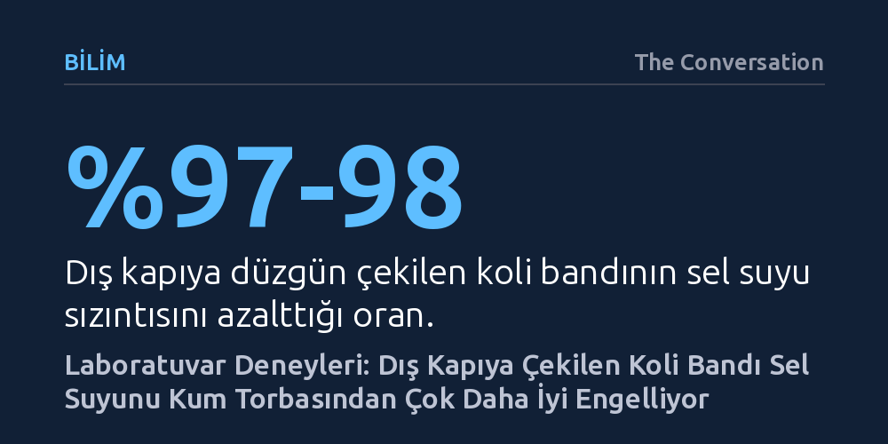

BILIM · The Conversation · 2026-10-17
Hull Üniversitesi'nin laboratuvar deneyleri, kapı dışına düzgün çekilen koli bandının sel suyu sızıntısını yüzde 98'e varan oranda azalttığını ve kum torbalarından çok daha etkili olduğunu ortaya koydu. Düşük maliyetli bu geçici yöntem, sel kapıya dayanmadan önce pratik bir ilk savunma hattı sunuyor.
Yıllardır sel anında ilk akla gelen kum torbalarının hantal ve yetersiz kaldığını; buna karşılık evdeki ucuz bir koli bandının içeri girebilecek tonlarca suyu durdurmada çok daha erişilebilir ve etkili bir ilk kalkan olabileceğini gösteriyor.

İklim krizinin tetiklediği şiddetli yağışlar ve ani su baskınları, ev sahiplerini giderek daha sık çaresiz bırakıyor. Sel felaketleri kapıya dayandığında alınacak önlemler genellikle ya çok pahalı mühendislik projelerini ya da temini ve yerleştirilmesi güç kum torbalarını akla getirir. Oysa İngiltere'deki Hull Üniversitesi'nde yürütülen yeni bir deneysel çalışma, hemen her evde bulunan veya nalburdan birkaç sterline temin edilebilen basit bir koli bandının, sel anında eve girebilecek su miktarını dramatik ölçüde azaltabileceğini gösterdi.
Birleşik Krallık hükümetinin 2025 yılında yayımladığı FloodReady Raporu, hanelerin sel riskini anlaması ve hazırlık yapabilmesi için pratik, ucuz ve kolay uygulanabilir yöntemlerin önemine dikkat çekmişti. Araştırmacılar, bu çağrıdan yola çıkarak gündelik hayatta paketleme veya basit tamiratlar için kullandığımız koli bantlarının su sızıntılarına karşı nasıl bir bariyer oluşturabileceğini laboratuvar ortamında sınamaya karar verdi. İlk bakışta kulağa pek olası gelmese de elde edilen bulgular, basit malzemelerin doğru kullanıldığında hayati bir savunma kalkanına dönüşebileceğini ortaya koydu.
Araştırma ekibi, gerçekçi sonuçlar elde etmek amacıyla piyasada yaygın olarak kullanılan modern ahşap, uPVC ve kompozit dış kapıları profesyonel tesisatçılara monte ettirdi. Kapının hemen arkasına yerleştirilen sızdırmaz bir hazne sayesinde, aralıklardan sızan her damla su toplandı ve dışarı pompalanarak sızıntı debisi kesintisiz ölçüldü. Deney boyunca su derinliği beşer santimetrelik kademelerle artırılarak 60 santimetreye kadar ulaştırıldı.
Herhangi bir koruma uygulanmayan kapıların arkasında oluşan tablo oldukça çarpıcıydı: Su seviyesi 60 santimetreye ulaştığında, kapı aralıklarından içeri sızan su miktarı saatte binlerce litreyi buluyordu. Ancak kapının dış cephesine düzgün biçimde çekilen koli bandı, bu devasa su akışını keserek sızıntıyı yüzde 97 ila 98 oranında azalttı. Hatta laboratuvarda test edilen özel sızdırmazlık bantları kullanıldığında bu oran daha da yukarılara çıktı. Her bir kapıya bandı uygulamanın ise yalnızca 10 ila 20 dakika sürdüğü belirlendi.
On yıllardır sel tehlikesi baş gösterdiğinde akla gelen ilk ve neredeyse tek acil durum çözümü kum torbaları olmuştur. Ancak araştırmacılar kum torbasının uygulamada büyük kısıtlamaları olduğunu hatırlatıyor: Taşınması son derece ağırdır, yerleştirilmesi yoğun fiziksel çaba gerektirir ve sel geçtikten sonra lağım suyuyla kirlenen torbaların imhası ciddi bir zahmete dönüşür. Dahası, neredeyse hiçbir hane bahçesinde onlarca çuval kumu hazır bulundurmaz.
Hull Üniversitesi'ndeki deneyde, tek bir kapının önüne plastik örtü desteğiyle tam 54 adet kum torbası yerleştirildi. Elde edilen netice ise kum torbası alışkanlığını ciddi şekilde sorgulatacak nitelikteydi. Kum torbaları koli bandının gösterdiği sızdırmazlık başarısına yaklaşamadı; en verimli oldukları su derinliğinde dahi sızıntıyı korumasız bir kapıya kıyasla ancak yüzde 70 oranında azaltabildi. Maliyet açısından bakıldığında, taşınması ve tedariki ciddi çaba ve masraf gerektiren kum torbalarına karşılık, 10 sterlin veya daha altına satın alınabilen tek bir rulo bant çok daha üstün bir koruma sundu.
Araştırmacılar, elde edilen bu çarpıcı sonuçların koli bandını kesin ve kalıcı bir sel çözümü yapmadığının altını önemle çiziyor. Koli bandı; özel olarak tasarlanmış sel kapılarının, mühendislik ürünü bariyerlerin ya da konuta özgü kapsamlı bir koruma planının yerini tutamaz. Bant yalnızca kapı çevresindeki belirli boşluklardan su girişini sınırlar; suyun duvar gözeneklerinden, döşeme altından veya kanalizasyon borularından geri basarak içeri dolmasını engelleyemez.
Ayrıca bandın performansı kapının ve kasanın yüzey durumuna, yapıştırma kalitesine ve suyun oluşturduğu baskıya doğrudan bağlıdır. Ciddi sel riski altındaki mülklerin profesyonelce tasarlanmış koruma önlemlerine sahip olması şarttır. Ancak sel uyarısı yapıldığında, su kapıya dayanmadan önceki o kritik saatlerde acil durum çantasına bir rulo koli bandı eklemek, evi tamamen kuru tutmasa bile içeri dolacak tonlarca suyu engelleyerek hasarı hafifletmede herkesin uygulayabileceği çok değerli bir ilk adımdır.